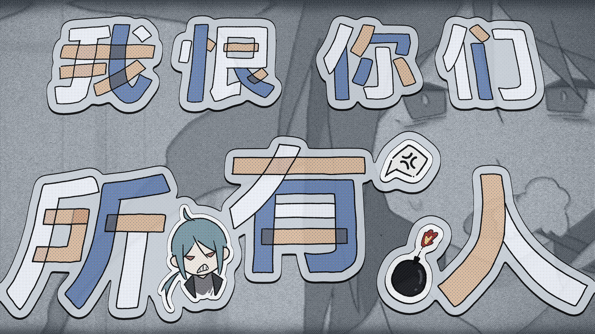
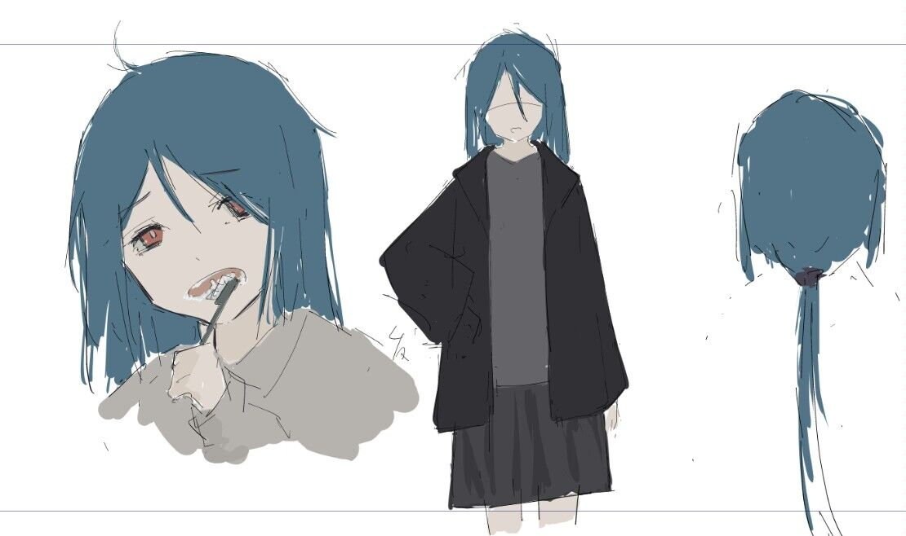

我恨你们所有人

Art by Nana

设定图
作品介绍
《我恨你们所有人》是一首带着防御姿态的快歌，恨是真的，但它更像一种自我保护的外壳。歌里的「あたし」不是现在的我，而是当时那个幼稚、直觉、很硬也很脆的自己，因为不懂人情世故的拐弯抹角，不理解那些看起来体面其实不是真心的社交动作而抓狂般，只会在生气时直接生气，开心的时候直接大笑。现在看来有点像Girls band cry的Nina（当时还没出呢！要是出了我就会指着屏幕：这简直就是我😱）
这首歌的起点很具体，还在曼城上学的宿舍的窗边，三月还在下雪，那种不合时宜的寒冷像一种讽刺，明明该变暖了，世界却还是反着来。于是开头一连串的“何で…”便来了...
“你们”的指向是过去一批曾经称得上朋友的人，到最后留下的不是吵架本身，而是一种很长期的、难以描述的心理创伤（其实我很不想这样描述），尤其当施加伤害的人还是一群“已经成年的男性”，甚至用很脏的词汇去骂一个并没有真正伤害任何人的小孩😡（虽然确实幼稚但是此孩干啥了？）那种不公平会把人的自尊磨得更尖，也把表达变得更像武器。
但《我恨你们所有人》并不是一首要认真恨歌（因为我不喜欢为了真的恨谁而写歌）它其实是一种日摇式的宣泄，还有点故意的明亮。因为不想把自己永远固定在仇恨里，这首歌记录的是某个阶段的真实反应，当我还不懂如何处理复杂情绪时，至少我还能把它写出来。
这首歌的翻译版本就是歌名本身：
我恨你们所有人。
是那一年我唯一能说出口的句子😡
歌词（Part 1）
なんで3月なのに雪が降るのか
なんで嫌いな人をフォローするのか
なんで都合の悪いことをして後悔するのか
なんでただ謝って全部なかったことにしようとするのか
みんな嫌いだ
私
わからない、わからない
正解なんて私が知るもんか
「大人になってない」なんて言い訳だ
これも嫌なんだ
だけど
知るわけない、知るわけない
正しいやり方なんて知るわけない
何年も生きてきたわけじゃないし
そんなことわかるわけなかった
歌词（Part 2）
同級生に間違ったこと言ってもいいのか
イヤホンしてるからって 聞こえなくていいのか
そもそもみんなと溶け合えないのも
全部自分で選んだんだ
人間って俗っぽいんだからね
全部バカみたい
ずっと好きな曲と
ずっと君だけを
でも全部忘れたいな！！
あんたも嫌いなんだ！
いつか
わかるのか、わかるのか
道筋なんていつかわかるのか
大人になってから全部知ったら
怖すぎるな、ああ
挫折感にまみれた17歳
大人の考えてることがわからない
あんたはそんな声で別れると言った
すごく傲慢だ